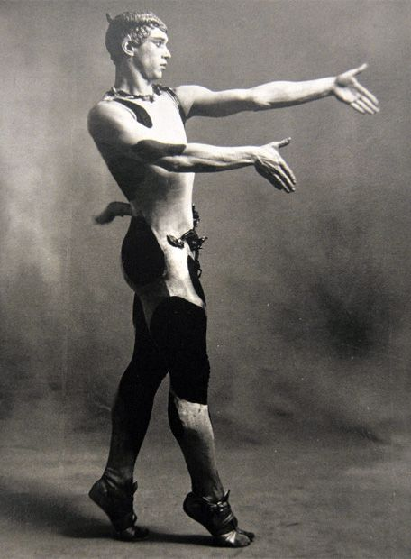
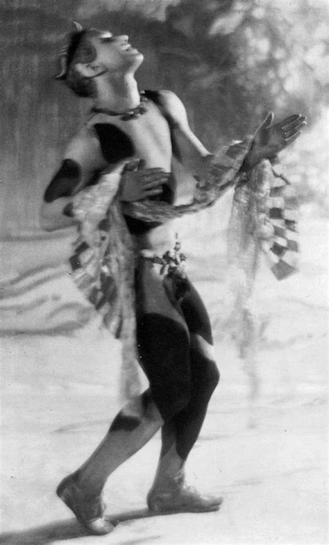
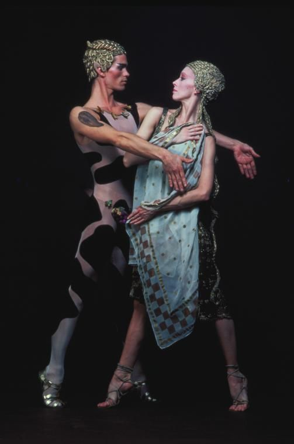
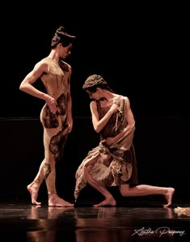
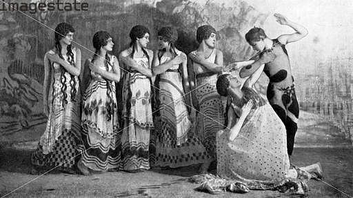
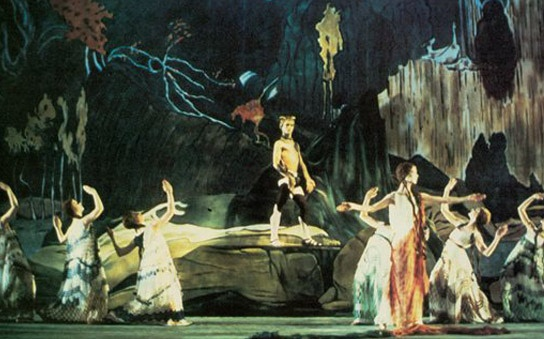

«Послеполуденный отдыхъ фавна» — балетъ Вацлава Нижинскаго · музыка Клода Дебюсси · оформленіе Леона Бакста
В театре Шатле публика ждёт балет — с виртуозными прыжками, вращениями и понятным сюжетом. Но занавес открывается, и зрители видят не привычное зрелище, а словно ожившую древнегреческую вазу: на фоне неподвижного пейзажа возникает фавн, а его тело складывается в непривычные, угловатые позы.
Такъ Вацлавъ Нижинскій предложилъ зрителямъ не просто новую исторію — новый способъ смотреть на танецъ.

Одноактный балет, созданный Нижинским для труппы Сергея Дягилева «Русские балеты». В центре — фавн, мифическое существо, которое отдыхает в полуденную жару и играет на свирели. Появляются нимфы. Фавн очарован, но встреча коротка: нимфы исчезают, оставив покрывало. Герой остаётся один — теперь ему доступны только воспоминание и воображение.
Здесь почти нет привычного сюжетного развития. Важнее сама атмосфера: жаркий полдень, внезапное волнение, желание, исчезновение и память. Зритель наблюдает не столько внешнее событие, сколько внутреннюю грёзу фавна.

Илл. IV · Древніе образцы пластики
Для зрителей начала XX века такой подход был смелым. Нижинский отошёл от привычных балетных ожиданий: тело — не только инструмент для прыжков и вращений, но линия, силуэт и образ. Балет строился не вокруг демонстрации техники, а вокруг настроения и пластического высказывания.
Леон Бакст помог создать для этого языка подходящую сцену: костюмы и оформление поддерживали впечатление древнего мифа, возникшего перед зрителем как живая картина. Хореография, музыка и визуальный образ работали вместе — части одного спектакля.
Нимф можно понимать как образы красоты, мечты или вдохновения: они появляются, очаровывают фавна и ускользают. Единого толкования нет — происходящее реально, или перед нами грёза фавна?
Оставленное покрывало напоминает герою о встрече. Он не может вернуть нимфу — но может удержать её след. Предмет становится знаком памяти: попыткой сохранить то, что уже исчезло.

Илл. VI · Грёза фавна
Чувственный характер постановки и необычная пластика удивили публику: некоторые зрители и критики сочли балет слишком смелым. Но спор вокруг спектакля оказался важен — стало ясно, что балет может не только развлекать, но и провоцировать, тревожить и предлагать новые способы выражения.
Нижинскій не просто изменилъ отдельныя движенія — онъ переосмыслилъ, какъ тело можетъ разсказывать исторію.

Илл. VII
Смотрите на постановку не как на рассказ, где нужно следить за каждым событием, — а как на картину, которая постепенно оживает.
Танцовщики напоминают фигуры на древнегреческой вазе — смотрите на рисунок тела сбоку.
Движение выразительно даже тогда, когда почти замирает: остановка — часть речи.
Оно подсказывает, к чему стремится герой, — взгляд здесь часть хореографии.
Материальный след исчезнувшей встречи — знак памяти в руках фавна.
Нажмите на таблицу, чтобы рассмотреть её въ увеличенномъ видѣ
Нижинскій заставилъ древнія позы заговорить движеніемъ — и напомнилъ, что иногда одинъ жестъ способенъ разсказать больше, чемъ цѣлая исторія.

«Послеполуденный отдых фавна» — о желании, воображении и памяти. И о том, как искусство изобретает для них новый язык.